정보통신기사(구) (2012-06-03 기출문제)
1과목: 디지털 전자회로
1. 다음 중 전원회로의 교류입력단과 직류부하단 사이의 기본 구성으로 적절한 것은?
- 교류입력단 - 정류회로 - 변압기 - 평활회로 - 정전압회로 - 직류부하단
- 교류입력단 - 변압기 - 정류회로 - 평활회로 - 정전압회로 - 직류부하단
- 교류입력단 - 정류회로 - 변압기 - 정전압회로 - 평활회로 - 직류부하단
- 교류입력단 - 변압기 - 정류회로 - 정전압회로 - 평활회로 - 직류부하단
(정답률: 69%)

2. 정전압 회로의 특성으로 가장 알맞은 것은?
- 입력전류가 변할 때 출력 전압은 일정하지 않다.
- 출력전압이 변할 때 부하 전류는 일정하다.
- 주위온도가 상승할 때 출력 전압은 일정하다.
- 부하가 변할 때 입력 전압은 일정하다.
(정답률: 63%)
3. 정전압 안정화 회로의 규격으로 적절하지 않은 것은?
- 직류 출력전압의 허용범위
- 직류 출력전류의 허용범위
- 입력 및 출력 임피던스의 허용범위
- 부하전류 변화에 따른 출력전압의 변동범위
(정답률: 55%)
4. 다음 그림과 같은 바이어스 회로에서 IC가 2[mA]이고 β가 50일 때 Rb의 값은? (단, VCC=10[V]이고 VBE=0.7[V]이다.)
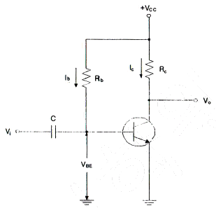
- 132.5[kΩ]
- 232.5[kΩ]
- 265[kΩ]
- 465[kΩ]
(정답률: 75%)
5. 다음 회로의 정현파 입력시 출력파형은 어느 것인가?
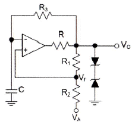
- 구형파
- 삼각파
- 톱니파
- 사인파
(정답률: 80%)
6. 다음은 부궤환 증폭 회로의 기본형이다. 옳은 명칭은 다음 중 어느 것인가?
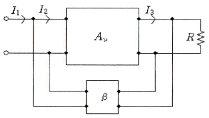
- 직렬 전압 궤환
- 직렬 전류 궤환
- 병렬 전압 궤환
- 병렬 전류 궤환
(정답률: 61%)
7. 푸시풀(push-pull) 전력증폭회로의 가장 큰 장점은?
- 우수 고조파 상쇄로 왜곡이 감소한다.
- 직류성분이 없어지기 때문에 효율이 크다.
- A급 동작시 크로스오버(cross over) 왜곡이 감소한다.
- 기수와 우수 고조파 상쇄로 효율이 증가한다.
(정답률: 71%)
8. 발진회로와 관계가 없는 것은?
- 부성저항
- 정궤환
- 부궤환
- 재생회로
(정답률: 68%)
9. 그림과 같은 수정편이 등가회로에서 L0=25[mH], C0=1.6[pF], R0=5[Ω], C1=4[pF]일 때 직렬 공진 주파수는? (단, π=3.14)
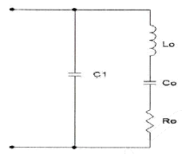
- 약 766.2[KHz]
- 약 776.2[KHz]
- 약 786.2[KHz]
- 약 796.2[KHz]
(정답률: 53%)
10. AM 복조(검파) 회로에서 직선 검파회로의 RC(시정수)가 반송파의 주기보다 짧은 경우에 일어나는 형상은?
- 충방전 특성이 늦어진다.
- 출력은 입력 전압의 반송파 진폭의 제곱에 비례하게 되며, 검파 감도가 높아지게 된다.
- 방전이 빨리 일어나서 저항 R의 단자 전압변동이 크게 일어난다.
- 포락선의 변화에 추종하지 못한다.
(정답률: 59%)
11. 그림과 같은 변조파형을 얻을 수 있는 변조방식에 대한 설명 중 옳은 것은?
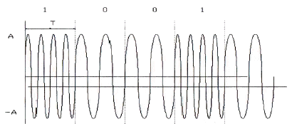
- 정현파의 주파수에 정보를 싣는 FSK 방식으로 2가지 주파수를 이용한다.
- 정현파의 진폭에 정보를 싣는 ASK 방식으로 2가지의 진폭을 이용한다.
- 정현파의 진폭에 정보를 싣는 QAM 방식으로 2가지의 진폭을 이용한다.
- 정현파의 위상에 정보를 싣는 2위상 편이변조방식이다.
(정답률: 80%)
12. CR 충방전 회로에서 상승시간(rise time)은 무엇인가?
- 출력전압이 최종값의 90[%]로부터 10[%]에 이르기까지 소요되는 시간
- 스위치를 넣은 후 출력전압이 최종값의 10[%]에서 90[%]까지 소요되는 시간
- 스위치를 넣은 후 출력전압이 최종값의 90[%]에서 100[%]까지 소요되는 시간
- 스위치를 넣은 후 출력전압이 최종값의 10[%]에 이르는데 소요되는 시간
(정답률: 86%)
13. 단안정 멀티바이브레이터는 다음 중 어떤 결합을 이용하는가?
- DC 결합
- AC 결합
- AC와 DC 결합
- 무결합
(정답률: 68%)
14. 십진수 10.375를 2진수로 변환하면?
- 1011.101(2)
- 1010.101(2)
- 1010.011(2)
- 1011.110(2)
(정답률: 79%)
15. 논리식 A(A+B+C)를 간단히 하면?
- A
- 1
- 0
- A+B+C
(정답률: 77%)
16. 다음 게이트 중에서 fan-out이 가장 큰 것은?
- RTL 게이트
- TTL 게이트
- DTL 게이트
- DL 게이트
(정답률: 72%)
17. 비동기식 직렬 전송(UART)시 start bit와 stop bit의 신호 상태는?
- start bit : low, stop bit : high
- start bit : high, stop bit : low
- start bit : low, stop bit : low
- start bit : high, stop bit : high
(정답률: 62%)
18. 십진 BCD 코드를 LED 출력으로 표시하려면 어떤 디코더 드라이브가 필요한가?
- BCD-10세그먼트
- Octal-10세그먼트
- BCD-7세그먼트
- Octal-7세그먼트
(정답률: 85%)
19. 여러 개의 회로가 단일 회선을 공동으로이용하여 신호를 전송하는데 필요한 장치는?
- 멀티플렉서
- 디멀티플렉서
- 인코더
- 디코더
(정답률: 87%)
20. 다음의 기억장치 중 보조기억장치가 아닌 것은?
- 자기 디스크
- RAM
- 자기 드럼
- 자기 테이프
(정답률: 80%)
2과목: 정보통신 시스템
21. NFC(Near Field Communication)의 설명 중 다른 것은?
- 13.56[MHz] 주파수 대역을 사용한다.
- 전송거리가 10[cm]이내이다.
- Bluetooth에 비해 통신설정 시간이 길다.
- P2P(Pear to Pear) 기능이 가능하다.
(정답률: 83%)
22. 정보통신망을 구성할 때 두 개 이상의 다수의 단말기가 하나의 통신회선에 연결되어 정보의 송수신을 행하는 방식은?
- 멀티포인트 방식
- 멀티플렉싱 방식
- 포인트 투 포인트 방식
- 집중 방식
(정답률: 75%)
23. 다음 ( ) 안에 적당한 장치의 이름은?
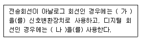
- (가) CSU, (나) DSU
- (가) 모뎀, (나) ONU
- (가) DSU, (나) CSU
- (가) 모뎀, (나) DSU
(정답률: 86%)
24. 다음의 정보통신망 구성 요소 중 휴대폰은 어느 구성 요소에 속하는가?
- 단말장치
- 교환장치
- 전송장치
- 중계장치
(정답률: 89%)
25. LAN의 프로토콜 구조로 올바른 것은? (LLC: Logical Link Control, MAC: Medium Access Control)
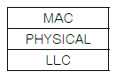
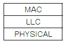
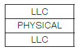
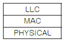
(정답률: 79%)
26. OSI 참조모델에서 서비스 프리미티브의 유형이 아닌 것은?
- REQUEST
- INDICATION
- REVIEW
- RESPONSE
(정답률: 80%)
27. OSI 참조모델에서 제 N-1 계층의 패킷의 데이터 부분은 제 N 계층의 패킷(데이터와 헤더) 전체를 포함한다. 이러한 개념을 무엇이라고 하는가?
- 서비스
- 인터페이스
- 대등-대-대등 프로세스
- 캡슐화
(정답률: 89%)
28. ISO의 OSI-7 계층 프로토콜 구조에서종점간(end-to-end)에 신뢰성 있고 투명한 데이터 전송을 수행하는 계층은?
- 데이터링크 계층
- 물리 계층
- 트랜스포트 계층
- 네트워크 계층
(정답률: 81%)
29. 프로토콜의 주요 요소 중에서 데이터 전송시기와 전송속도에 관한 특성을 나타내는 것은?
- 타이밍
- 구문
- 의미
- 표준
(정답률: 89%)
30. 대등-대-대등(pear-to-pear) 프로세스를 설명한것 중 가장 적절한 것은?
- 통신장치 간에 통신할 때 해당 계층에서 통신하는 각 장치의 프로세스
- 하나의 장치에서 각 계층이 바로 아래 계층의 서비스를 이용하는 프로세스
- 인접한 계층 사이의 인터페이스를 통해 전달되는 프로세스
- 임의의 두 통신장치 간에 자신의 구조에 상관없이 서로 통신할 수 있도록 해주는 프로세스
(정답률: 74%)
31. IPv6의 주소 유형으로 옳지 않은 것은?
- Broadcast
- Unicast
- Anycast
- Multicast
(정답률: 75%)
32. IPv4의 C 클래스 네트워크를 26개의 서브넷으로 나누고, 각 서브넷에는 4~5개의 호스트를 연결하려고 한다. 이러한 서브넷을 구성하기 위한 서브넷 마스크 값은?
- 255.255.255.192
- 255.255.255.224
- 255.255.255.240
- 255.255.255.248
(정답률: 73%)
33. 근거리통신망(LAN)의 매체 접근 제어(Medium Access Control) 프로토콜 중 패킷 충돌이 발생하지 않는 방식은?
- CSMA/CD
- Slotted ALOHA
- ALOHA
- Token Ring
(정답률: 77%)
34. 단순한 정보전송 이외에 정보의 축적, 가공, 변환처리를 통해 새로운 부가서비스를 제공하는 통신망을 의미하는 것은?
- LAN(Local Area Network)
- VAN(Value Area Network)
- WAN(Wide Area Network)
- PSTN(Public Switched Telephone Network)
(정답률: 87%)
35. 광대역통합망(BcN, Broadband Convergence network)에서 VoIP 서비스를 제공하기 위한 프로토콜이 아닌 것은?
- R2 MFC
- SIP
- H.323
- Megaco
(정답률: 52%)
36. VoIP 기술의 특징을 설명한 것으로 옳지 않은 것은?
- PSTN에 비해 요금이 저렴하다.
- 이미 구축된 인터넷 장비를 활용함으로써 구축 비용이 상대적으로 저렴하다.
- 인터넷과 연계된 다양한 부가 서비스 기능이 가능하다.
- 기능 및 동작이 PSTN에 비해 단순하고, 보안에 강하다.
(정답률: 82%)
37. 정보통신 시스템의 하드웨어 설계시 고려사항이 아닌 것은?
- 운용, 유지 보수 및 관리
- 처리능력 확보
- 신뢰성
- 전기적 및 물리적 성능
(정답률: 51%)
38. 네트워크관리시스템(NMS) 운용 중 현장 Access 설비로부터 1분당 평균 20개의 패킷이 전송되어 오고 있다. 이 스테이션에서의 처리 시간이 1 패킷당 평균 2초라 할 때 시스템의 이용률은?
- 1/3
- 2/3
- 1/6
- 5/6
(정답률: 87%)
39. IPv4 주소체계는 Class A, B, C, D, E로 구분하여 사용하고 있으며 Class C는 가장 소규모의 호스트를 수용할 수 있다. Class C가 수용할 수 있는 호스트 개수로 가장 적합한 것은?
- 1개
- 256개
- 1,024개
- 65,536개
(정답률: 85%)
40. 다음 중 방화벽의 설명으로 알맞은 것은?
- 방화벽은 해킹 등 외부의 불법적인 침입으로부터 내부를 보호하는 역할을 한다.
- 방화벽은 네트워크나 시스템에서 일어나는 행위를 관찰하고 정상적이지 않은 행위에 대해 탐지하는 역할을 한다.
- 방화벽은 침입차단 시스템, IPS, VPN 등 다양한 종류의 보안 솔루션을 하나로 모은 통합보안관리 시스템이다.
- 방화벽은 공중망을 사설망처럼 이용할 수 있도록 사이트 양단간 암호화 통신을 지원하는 장치이다.
(정답률: 88%)
3과목: 정보통신 기기
41. 다음 중 데이터 전송계에서 신호변환 외에 전송신호의 동기제어 송수신 확인, 전송 조작절차의 제어 등을 담당하는 역할을 하는 장치는?
- DCE
- DTE
- CCU
- CC
(정답률: 75%)
42. 블루투스에 대한 설명으로 거리가 가장 먼 것은?
- 2.4[GHz] 주파수 대역을 사용한다.
- 저가격, 저전력 무선 구현을 지원한다.
- 블루투스 규격은 크게 코어 규격과 프로파일 규격으로 구분한다.
- 주변조 방식은 PSK이다.
(정답률: 87%)
43. 정보단말기의 발전 양상에 대한 설명으로 맞지 않는 것은? (문제 오류로 실제 시험에서는 모두 정답처리 되었습니다. 여기서는 1번을 누르면 정답 처리 됩니다.)
- 고속화
- 지능화
- 범용화
- 개인화
(정답률: 80%)
44. xDSL에서 사용되는 변조방식인 DMT의 장점이 아닌 것은?
- 회선상태에 따라 다양한 속도를 지원한다.
- 주파수를 독립적으로 운용하여 초기 모뎀간의 각 구간마다 전송파워의 범위를 정할 수 있다.
- 회선의 잡음이 특정대역에 영향을 줄 경우에는 그 대역에서 통신이 가능한 QAM 크기를 적용하여 최대의 통신속도 제공이 가능하다.
- 초기 모뎀간의 설정시간이 짧고 오류 검사가 간편하다.
(정답률: 76%)
45. 다음 중 모뎀의 송신기의 구성요소가 아닌 것은?
- 스크램블러
- 변조기
- 필터
- 등화기
(정답률: 68%)
46. 다음은 정보통신 네트워크의 장치에 관한 설명이다. 그 중 라우터에 해당되는 것은?
- 복수개의 네트워크를 연결하는데 사용하는 장치이다.
- 데이터의 송ㆍ수신 처리를 담당하는 장치이다.
- 데이터 송ㆍ수신 과정에서 패킷으로 조립하거나 분해하는 장치이다.
- 양측 단말기간 링크조건을 설정하는 장치이다.
(정답률: 82%)
47. 시분할 다중화기(Time Division Multiplexer)의 특징에 해당하지 않는 것은?
- 고속 전송 가능
- 내부에 버퍼 기억장치가 필요
- 주로 점대점(Point-to-Point) 시스템에서 사용
- 좁은 주파수 대역을 사용하는 여러 개의 신호들이 넓은 주파수 대역을 가진 하나의 전송로를 따라서 동시에 전송되는 방식
(정답률: 78%)
48. 다음 중 디지털 전화기의 특징에 대한 설명으로 틀린 것은?
- 음질이 우수하다.
- 기능이 다양하다.
- 데이터 단말기의 접속이 용이하다.
- 회로가 단순하다.
(정답률: 86%)
49. 20개의 중계선으로 5[Erl]의 호량을 운반하였다면 이 중계선의 효율은 몇 [%]인가?
- 20[%]
- 25[%]
- 30[%]
- 35[%]
(정답률: 89%)
50. 인터넷을 통하여 음성전화 서비스가 제공되는 단말기를 무엇이라 하는가?
- VoIP 전화기
- 무선 전화기
- 코드리스 전화기
- 유선 전화기
(정답률: 88%)
51. CDMA 대역확산 통신기술을 이용하여 다중경로전파 가운데 원하는 신호만을 분리할 수 있는 수신기는?
- 레이크 수신기
- Multi channel 수신기
- 헤테로다인 수신기
- VLR 수신기
(정답률: 86%)
52. 무선송신기에서 주파수 체배기가 사용되는 목적은?
- 수정발진자의 주파수보다 더 낮은 주파수를 얻기 위해
- 수정발진자의 주파수보다 더 높은 주파수를 얻기 위해
- 수정발진자의 주파수 허용편차를 개선하기 위해
- 수정발진자의 주파수를 정수배 감소시키기 위해
(정답률: 81%)
53. 디지털 셀룰러방식에서 페이딩에 의한 수비트의 연속적인 오류를 극복하기 위하여 오류정정부호와 함께 사용하는 기술은?
- 간섭제거기술
- 인터리빙기술
- 전력제어기술
- 등화기술
(정답률: 81%)
54. 유전율 εr이 7이고 투자율 μr이 3인 물질이 있다. 이 물질에 주파수가 3[GHz]인 전자파가 전파되고 있다. 이 전자파의 파장을 계산하면 얼마인가?
- 0.0218[m]
- 0.2180[m]
- 1.2180[m]
- 12.180[m]
(정답률: 53%)
55. 이동통신의 세대와 기술이 바르게 짝지어진것은?
- 1세대 : GSM
- 2세대 : AMPS
- 3세대 : WCDMA
- 4세대 : CDMA
(정답률: 77%)
56. 어느 멀티미디어 기기의 전송대역폭이 6[MHz]이고 전송속도가 19.39[Mbps]일 때 이 기기의 대역폭 효율값으로 가장 적합한 것은?
- 약 2.23
- 약 3.23
- 약 5.25
- 약 6.42
(정답률: 88%)
57. 다음은 무엇에 관한 설명인가?
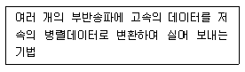
- AMC(Adaptive Modulation and Coding)
- HARQ(Hybrid ARQ)
- DCT(Discrete Cosine Transform)
- OFDM(Orthogonal Frequency Division Multiplexing)
(정답률: 84%)
58. 멀티미디어 특성에 대한 설명 중 바르지 못한 것은?
- 비디오, 오디오 등 두 가지 이상의 미디어를 동시에 수용할 수 있어야 한다.
- 멀티미디어를 하나의 시스템에서 사용할 수 있어야 한다.
- 멀티미디어 통신 서비스는 원격회의, 인터넷 방송 등이 있다.
- 모든 정보를 아날로그화하여 저장, 편집이 쉽도록 하여야 한다.
(정답률: 83%)
59. 다음 중 메시지 통신시스템(MHS : Message Handling System)의 구성 요소에 해당하지 않는 것은?
- User Agent
- Message Transfer Agent
- Message Store
- Codec
(정답률: 87%)
60. 현재 멀티미디어 기기의 압축에 사용되는 방식이 아닌 것은 무엇인가?
- MPEG1
- MPEG2
- MPEG4
- MPEG21
(정답률: 84%)
4과목: 정보전송 공학
61. 5[kHz]의 음성신호를 재생시키기 위한 표본화 주기는?
- 225[μs]
- 200[μs]
- 125[μs]
- 100[μs]
(정답률: 73%)
62. PCM 단계 중에서 연속적인 아날로그 신호를 입력으로 받아 불연속적인 진폭을 갖는 펄스를 생성하는 과정에 해당되는 것은?
- 표본화
- 양자화
- 부호화
- 압축기
(정답률: 74%)
63. 세계 최초로 국내에서 상용화된 WiBro의 다중 전송방식 및 송신/수신 Duplex 방식은?
- OFDM/TDD
- CDMA/FDD
- OFDM/FDD
- TDMA/ODD
(정답률: 77%)
64. 비주기적인 임의의 파형의 주파수 스펙트럼을 해석하는 방법으로 가장 적절한 것은?
- 퓨리에 급수로 해석한다.
- 펄스 열로 표시한다.
- 델타함수 열로 해석한다.
- 퓨리에 변환으로 해석한다.
(정답률: 77%)
65. 이동통신이나 위성통신에서 사용되는 무선 다원 접속(Radio Multiple Access) 방식에 해당되지 않는 것은?
- FDMA
- TDMA
- CDMA
- WDMA
(정답률: 78%)
66. 중계케이블의 통화전압이 55[V]이고 잡음전압이 0.⑤5[V]이면 잡음레벨[dB]은?
- 44[dB]
- 50[dB]
- 55[dB]
- 60[dB]
(정답률: 76%)
67. DS CDMA에 대한 다음 설명 중 틀린 것은?
- 원근단 간섭문제를 해결해야 성능이 향상된다.
- 상호상관함수의 값이 클수록 좋은 성능이 얻어진다.
- 사용자 상호간에 직교성을 가진 확산부호를 사용한다.
- 주파수 사용효율이 높다.
(정답률: 71%)
68. 광통신에서 전송 용량을 증대시키는(고속화) 기술로서 가장 관계가 적은 것은?
- Soliton 기술
- WDM(Wavelength Division Multiplexing) 방식
- EDFA(Erbium Doped Fiber Amplifier)
- Intensity Modulation
(정답률: 60%)
69. 다음 중 수신한 마이크로파를 IF(Intermediate Frequency)로 변환하여 증폭한 후 다시 마이크로파로 변환하여 송신하는 지상 마이크로파 중계방식은?
- 직접 중계방식
- 헤테로다인 중계방식
- 검파 중계방식
- 무급전 중계방식
(정답률: 76%)
70. 광섬유는 Core 광섬유의 굴절율 분포에 따라 구분하면 계단형(Step index)과 2차 곡선 모양(Graded index)이 있고, 전파모드 수가 1개이면 Single mode이고, 다수이면 Multi mode라고 한다. 이 2개 특성을 조합하여 광섬유 종류를 나타내는데, 아래 내용 중 상용화되지 않은 광섬유 종류는 어느 것인가?
- Step Index Multi Mode
- Step Index Single Mode
- Graded Index Multi Mode
- Graded Index Single Mode
(정답률: 78%)
71. 다음 중 비동기 전송방식의 특징이 아닌 것은?
- 저속도의 EIA-232D 데이터 전송에 주로 사용
- 긴 데이터 비트 열을 연속적으로 전송하는 방식
- 수신기가 각각 새로운 문자의 시작점에서 재동기를 수행
- 매 문자마다 Start, Stop 비트를 부가하여 전송
(정답률: 72%)
72. 블록동기는 문자동기와 플래그 방식으로 구분되는데 문자동기 방식의 설명 중 틀린 것은?
- 데이터블록 앞에 데이터의 시작을 알리는 전송제어 코드 "STX" 사용
- 전송 시 동기용 전송 제어코드 "SYN" 2개 이상 사용
- 데이터 전송의 끝을 의미하는 "END" 제어신호 사용
- 에러를 체크하기 위한 에러제어코드 "BCC" 사용
(정답률: 82%)
73. 다음 중 단방향 통신 방식이 아닌 것은?
- 지상파 TV 방송
- 휴대용 무선통신 방식(TRS)
- 라디오 방송
- 무선 호출 방식
(정답률: 80%)
74. 동기식 전송(Synchronous Transmission)의 설명 중 틀린 것은?
- 전송속도가 비교적 낮은 저속 통신에 사용한다.
- 전 블록(또는 프레임)을 하나의 비트열로 전송할 수 있다.
- 데이터 묶음 앞쪽에는 반드시 동기문자가 온다.
- 한 묶음으로 구성하는 글자들 사이에는 휴지 간격이 없다.
(정답률: 77%)
75. 다음 중 공통선 신호방식으로 전용 데이터 전송로를 필요로 하는 것은?
- R2
- X.25
- NO.7
- TCP/IP
(정답률: 73%)
76. LAN 프로토콜 중에서 Token Ring 방식과 CSMA/CD(Ethernet) 방식이 서로 경쟁하다가 CSMA/CD(Ethernet)로 통일된 가장 중요한 원인은 무엇인가?
- 저렴한 가격
- MAN과의 정합 용이성
- 넓은 대역폭
- 확장성(Scalability)
(정답률: 84%)
77. 어느 특정시간 동안 10,000,000개의 비트가 전송되고, 전송된 비트 중 2개가 오류로 판명되었을 때 이 전송의 비트 에러율은 얼마인가?
- 1×10-6
- 1×10-7
- 2×10-6
- 2×10-7
(정답률: 78%)
78. 네트워크에 연결될 때마다 특정 서버가 가용한 IP 주소를 동적으로 배정해 주는 프로토콜은?
- ICMP
- ARP
- UDP
- DHCP
(정답률: 65%)
79. 회선교환방식에 대한 설명 중 맞는 것은?
- 속도나 코드변환이 가능하다.
- 데이터 전용 교환방식으로 대역폭을 효율적으로 사용한다.
- 바로 접속은 되지만 전송지연이 생긴다.
- 고정적인 대역폭을 갖는다.
(정답률: 65%)
80. IP 통신망의 경로 지정 통신 규약의 하나로 경유하는 라우터의 대수(또는 홉)에 따라 최단 경로를 동적으로 결정하는 거리 벡터 알고리즘을 사용하는 프로토콜은?
- RIP(Routing Information Protocol)
- OSPF(Open Shortest Path First)
- BGP(Border Gateway Protocol)
- DHCP(Dynamic Host Configuration Protocol)
(정답률: 84%)
5과목: 전자계산기일반 및 정보통신설비기준
81. 마이크로프로그램에 의한 각 기계어 명령들은 제어 메모리에 있는 일련의 마이크로 오퍼레이션의 동작을 시작하는데 다음 중 맞지 않는 동작은?
- 주기억 장치에서 명령어 인출하는 동작
- 오퍼랜드의 유효 주소를 계산하는 동작
- 지정된 연산을 수행하는 동작
- 다음 단계의 주소를 결정하는 동작
(정답률: 68%)
82. 2진수 0000000001111100의 2의 보수 값은 얼마인가?
- 1111111110000100
- 1111111110000011
- 1111111110000110
- 1111111110000010
(정답률: 64%)
83. 다음 보기는 프로그램 종류에 관련된 문항이다. 틀린 것은? (문제 오류로 실제 시험에서는 나, 다번이 정답처리 되었습니다. 여기서는 나번을 누르면 정답 처리 됩니다.)
- 베타버전이란 개발자가 상용화하기 전에 테스트용으로 배포하는 것을 말한다.
- 쉐어웨어란 기간이나 기능 제한 없이 무료로 사용하는 것을 말한다.
- 데모버전이란 기간이나 기능의 제한 없이 무료로 사용하는 것을 말한다.
- 테스트버전이란 데모버전 이전에 오류를 찾기 위해 배포하는 것을 말한다.
(정답률: 86%)
84. CPU가 무엇인가를 하고 있는가를 나타내는 상태를 메이저 상태라고 하는데 다음 중 메이저 상태의 종류에 해당되지 않는 것은?
- Fetch 상태
- Indirect 상태
- Timing 상태
- Interrupt 상태
(정답률: 61%)
85. 다음 지문의 괄호 안에 들어갈 용어는?
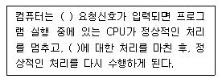
- Recursive
- DUMP
- DMA
- Interrupt
(정답률: 86%)
86. 주소영역(address space)이 1[GB]인 컴퓨터가 있다. 이 컴퓨터의 MAR(memory address register)의 크기는 얼마인가?
- 30 비트
- 30 바이트
- 32 비트
- 32 바이트
(정답률: 65%)
87. 인터럽트의 처리과정에서 인터럽트 처리 프로그램(Interrupt handling program)으로 이전하기 전에 시스템 제어 스택(system control stack)에 저장해야 할 정보는 무엇인가?
- 현재의 프로그램 계수기(program counter)의 값
- 이전에 수행하던 프로그램의 명칭
- 인터럽트를 발생시킨 장치의 명칭
- 인터럽트 처리 프로그램의 시작 주소
(정답률: 81%)
88. 16진수 BEAD에서 숫자 E 자리의 가중치(weighted value)는 얼마인가?
- 10
- 16
- 32
- 256
(정답률: 62%)
89. 다음 중 주소지정방식에 대한 설명으로 틀린 것은?
- 직접주소지정방식에서 오퍼랜드는 실제 주소 값이다.
- 간접주소지정방식은 최소 두 번 메모리에 접속해야 실제 데이터를 가져온다.
- 즉시주소지정방식에서 오퍼랜드는 실제 데이터 값이다.
- 레지스터주소지정방식은 프로그램카운터(PC)와 관련이 있다.
(정답률: 57%)
90. 마이크로프로세서의 명령어 실행과정 중, 데이터가 기억장치에 저장되어 있다면, 명령어는 데이터가 저장된 기억장치 주소를 포함한다. 그러나 명령어에 포함되는 주소가 데이터의 주소를 저장하고 있는 기억장치 주소라고 한다면, 실행되기 전에 주소를 기억장치로부터 읽어와야 한다. 이러한 과정을 무엇이라고 하는가?
- 인출 사이클
- 실행 사이클
- 간접 사이클
- 직접 사이클
(정답률: 58%)
91. 전기통신사업자가 법원ㆍ검사ㆍ수사관서의 장ㆍ정보수사기관의 장으로부터 재판, 수사, 형의집행 또는 국가안정보장에 대한 위해를 방지하기 위한 정보수집을 위하여 자료의 열람이나 제출을 요청받을 때에 응할 수 있는 대상이 아닌 것은?
- 이용자의 성명과 주민등록번호
- 이용자의 주소와 전화번호
- 이용자의 아이디
- 이용자의 동산 및 부동산
(정답률: 84%)
92. 선로설비의 회선 상호간, 회선과 대지간 및 회선의 심선 상호간의 절연저항은 직류 500볼트 절연저항계로 측정하여 몇 옴 이상이어야 하는가?
- 1메가 옴
- 10메가 옴
- 50메가 옴
- 100메가 옴
(정답률: 78%)
93. 다음의 설명에 해당하는 것은?
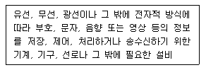
- 전기통신설비
- 자가통신설비
- 전자통신설비
- 정보통신설비
(정답률: 54%)
94. 구내통신선로설비에서 충분한 회선을 확보하여야 하는 경우와 관계없는 것은?
- 옥외로 인입되는 국선의 구성
- 구내로 인입되는 국선의 수용
- 구내회선의 구성
- 단말장치 등의 증설
(정답률: 71%)
95. 다음 중 일반적인 통신관련 시설의 접지저항 허용 기준은 얼마인가?
- 10[Ω] 이하
- 20[Ω] 이하
- 25[Ω] 이하
- 30[Ω] 이하
(정답률: 78%)
96. 다음 중 정보통신공사업의 영업정지 사유에 해당되지 않는 것은?
- 공사업의 등록기준에 미달할 때
- 공사업자의 신고의무를 위반하거나 거짓으로 신고한 경우
- 수급공사의 범위를 초과하여 공사를 도급받을 때
- 타인에게 등록증이나 등록수첩을 대여했을 때
(정답률: 61%)
97. 다음 중 전기통신사업의 구분으로 틀린 것은?
- 기간통신사업
- 별정통신사업
- 부가통신사업
- 정보통신사업
(정답률: 72%)
98. 정보통신서비스 제공자가 역무의 제공을 거부하는 조치를 할 수 있는 경우가 아닌 것은?
- 광고성 정보전송으로 역무의 제공에 장애가 일어날 우려가 있는 경우
- 위탁받은 광고성 정보전송이 영리 목적이라고 보는 경우
- 제공하는 서비스가 불법 광고성 정보전송에 이용되고 있는 경우
- 정보통신서비스 이용자가 광고성 정보의 수신을 원하지 않는 경우
(정답률: 65%)
99. 정보통신공사에서 공사와 감리를 함께 할 수 없도록 되어 있는 경우가 아닌 것은?
- 공사업자와 감리용역업자가 동일인 경우
- 공사업자와 감리용역업자가 모회사와 자회사의 관계에 있는 경우
- 공사업자와 감리용역업자가 서로 해당 법인의 임직원의 관계인 경우
- 공사업자와 감리용역업자가 모두 한국정보통신공사협회에 가입되어 있는 경우
(정답률: 78%)
100. 다음 중 정보통신설비 보전을 위한 예비기기 설치시 고려대상과 가장 관계가 적은 것은?
- 설비의 중요도
- 고장발생률
- 설비의 설치비용
- 복구소요시간
(정답률: 70%)
전원회로에서는 교류입력단에서 입력된 교류전압을 변압기를 통해 적절한 전압으로 변환한 후, 정류회로를 통해 교류전압을 직류전압으로 변환합니다. 이후 평활회로를 통해 직류전압을 안정화시키고, 정전압회로를 통해 필요한 전압을 설정합니다. 마지막으로 직류부하단에서는 이러한 전압을 이용하여 직류부하를 구동합니다. 따라서, "교류입력단 - 변압기 - 정류회로 - 평활회로 - 정전압회로 - 직류부하단"이 전원회로의 기본 구성입니다.